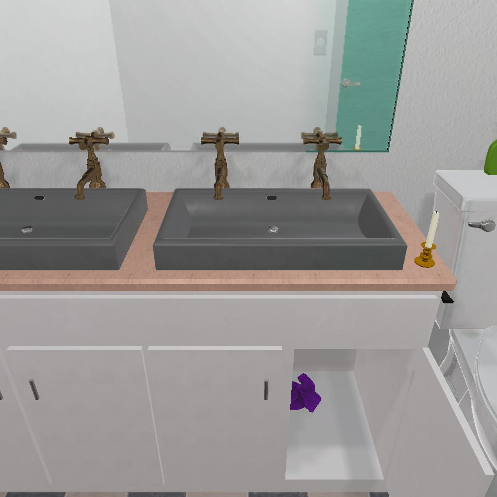

---------------------------------------------------------task: 9---------------------------------------------------------
--------------------------------------------------------------------------------------------------------------------------------------------------------------------
--------------------------------------------------------------------------------------------------------------------------------------------------------------------
Step:--------------------------------------------------------------------------15-------------------------------------------------------------------------------
----------------------------------------
VLM Prompt:
Image1:
Image2:
**Instruction**
1. Analyze the provided images to identify all visible household objects and compare the difference between images (e.h. whether the object is opened or not and taken on hand or not), focusing on those relevant to the task description "put some soapbottle on toilet."
2. Use the analysis of images and the task hint "The agent must find an object of the desired type, pick it up, find the correct location to place it, and put it down there." to answer the question: what is the most reasonable action in the choices for the task description "put some soapbottle on toilet"?
3. Decide and write the answer using the template: The answer is: (i): , where i is the real number. If there is no desired object in images, search every place based on **Initial Observation** to find the object. And if no one is exactly correct, choose a similar answer.
**Initial Observation**
You are in the middle of a room. Looking quickly around you, you can see bathtub (1), bathtubbasin (1), toilet (1), cabinet (1-4), sink (1-2), countertop (1), sinkbasin (1-2), toiletpaperhanger (1), towelholder (1), garbagecan (1), handtowelholder (1)
**Answer Choices**
(1): go to bathtub 1
(2): go to bathtubbasin 1
(3): go to toilet 1
(4): go to sink 1
(5): go to sink 2
(6): go to countertop 1
(7): go to cabinet 4
(8): go to sinkbasin 1
(9): go to sinkbasin 2
(10): go to toiletpaperhanger 1
(11): go to towelholder 1
(12): go to garbagecan 1
(13): go to handtowelholder 1
(14): open cabinet 3
(15): close cabinet 3
(16): examine cabinet 3
**Answer**
Let's think step by step by following the instructions.
----------------------------------------
----------------------------------------
Original Response:
Firstly, we need to analyze the images to identify all visible household objects and the differences between the images. In both images, we see a bathroom setting with sinks, a countertop, and cabinets. There is no visible soap bottle in either of the images. However, there is a difference between the images; in Image 1, cabinet 3 is closed, and in Image 2, cabinet 3 is open with a purple object inside it.
Based on the task description "put some soapbottle on toilet," we need to find a soap bottle. Since there is no soap bottle visible on the countertop or in the sink basins, we should search the cabinets. The initial observation notes that there are cabinets numbered 1-4. The only change we see in the images regarding cabinets is that cabinet 3 is opened in the second image, revealing a purple object that could potentially be a soap bottle.
Using the task hint, we know that the agent must find the desired object, pick it up, and place it in the correct location. Given the context and the visible clue of the open cabinet 3 with a possible soap bottle inside, the most reasonable action would be to examine cabinet 3 to confirm if the object is indeed a soap bottle and then proceed with picking it up.
The answer is: (16): examine cabinet 3.
----------------------------------------
----------------------------------------
>>> Refine Original VLM Response and Get Pure Action: examine cabinet 3
----------------------------------------
-----------------------------------------------------------------
Running time: 17.457362174987793 seconds
Total Money: 3.9577300000000033
-----------------------------------------------------------------
-----------------------------------------------------------------
Text Observation:On the cabinet 3, you see a faucet 1, a faucet 2, a cloth 1, a candle 1, and a spraybottle 1.
-----------------------------------------------------------------
UNSUCCEED